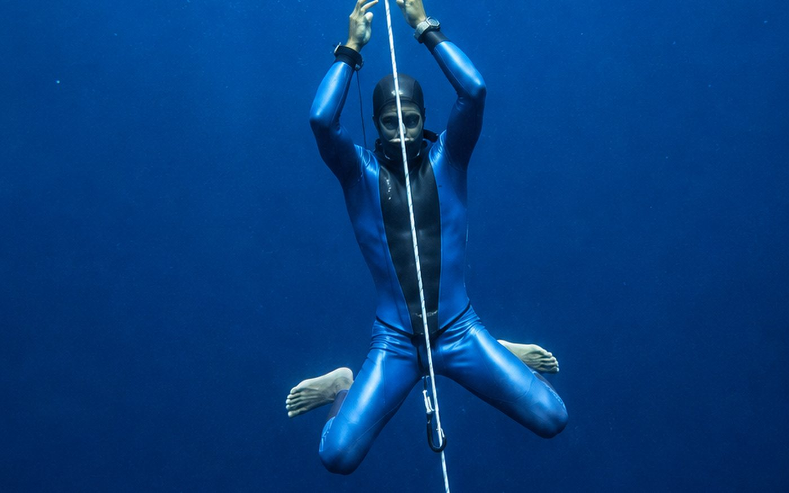

If you have scuba dived before, you have already seen the underwater world. You know what a reef looks like at 18 metres. You know the way sunlight breaks apart as you descend. You have hovered next to a turtle or watched a school of jacks part around you.
But there is a version of that experience you have not had yet, and the difference between the two is more significant than most scuba divers expect when they first try freediving.
The barrier you did not know was there
Scuba diving takes you into the ocean carrying a machine. The regulator, the tank, the BCD, all of it keeps you alive, keeps you comfortable, keeps you in. But it also creates a permanent separation between you and the water. The bubbles announce you. The equipment isolates you. You are a visitor with life support, and the ocean treats you accordingly.
Marine life, fish especially, has learned what exhaled bubbles mean. They mean a large, noisy, unfamiliar presence. The fish moves away before you arrive. The octopus retreats into its rock. The encounter happens at distance, because there is always distance when you carry a tank.
Freediving removes the machine. No bubbles. No noise. No mechanical separation from the water. You are not visiting with equipment, you are arriving as an animal. And the ocean responds to that completely differently.
What you already know that transfers
Scuba divers make excellent freediving students. Here is why: you already understand the underwater environment. You are not afraid of depth in the abstract. You know how to equalise your ears. You know what to do when the unexpected happens. You have a relationship with the ocean that most beginners take months to build.
Skills that transfer directly
- Ear equalisation
- Spatial awareness underwater
- Comfort at depth
- Reading marine life behavior
- Understanding currents
- Underwater navigation
What you will learn to unlearn
- Breathing continuously (you breathe once)
- Positive buoyancy mindset
- Relying on equipment feedback
- Task-loading, freediving is simple
- Breathing through anxiety
What you need to unlearn
The main adjustment for scuba divers coming to freediving is psychological more than physical. Scuba training teaches you to breathe continuously, every sensation of discomfort or stress is met by taking another breath. In freediving, that option is not available. Instead of breathing through discomfort, you learn to be still within it.
This sounds harder than it is. The Mammalian Dive Response, the ancient parasympathetic reflex that activates when your face enters the water and your breath is held, does a significant amount of the work for you. Heart rate slows. The urge to breathe arrives later than expected. Your body, it turns out, already knows how to do this. It just needs the training to stop interfering with itself.

Freediving on the line, descent without equipment, without bubbles, without distance from the water
The difference in the water
The moment most scuba divers become freedivers is specific. It usually happens on the second or third open water dive, when the technique has settled and the anxiety about breath-holding has quieted. They descend the line, they equalise, they feel the pressure building and the light changing, and they notice that it is completely silent.
Not quiet. Silent. No regulator. No bubbles. No hiss of air on the exhale. Just the sound of the water and the sound of their own heartbeat slowing down.
Most people do not know that their heartbeat is audible underwater without equipment. Most scuba divers have never heard it. In freediving, it is one of the first things you notice, and one of the most unexpectedly moving.
Can you do both?
Yes, and many dedicated divers do. Scuba and freediving are complementary disciplines. Scuba gives you time at depth, the ability to photograph, the extended exploration of a reef system. Freediving gives you a different quality of presence, brief, total, unmediated. They are different relationships with the same environment.
If you are a scuba diver considering your first freediving course, AIDA 2 is the natural starting point. Your existing comfort in the water means you will not spend time adjusting to being underwater, you will move straight into what makes freediving different from everything else you have done in the sea.